항로표지기사 (2021-03-07 기출문제)
1과목: 항로표지일반
1. IALA 해상부표식의 내용에 대한 설명으로 틀린 것은?
- 특수 표지는 항행원조를 주목적으로 하며 공사구역 등 특별한 구역을 표시한다.
- 보조표지는 통상 항로 밖에 설치하며 항행안전에 관련된 정보를 제공하는 표지이다.
- 안전수역 표지는 그 전 주위가 가항수역임을 표시하는 것으로 중앙선표지 및 수로 중앙표지가 있다.
- 고립장애표지는 그 전 주위가 가항수역인 암초, 침선 등 고립된 장해물 상에 설치 또는 계류하는 표지이다.
(정답률: 알수없음)
2. 해도도식 중 PA의 뜻은?
- 개략적인 위치
- 의심되는 수심
- 의심되는 위치
- 존재의 추측 위치
(정답률: 알수없음)
3. 규정된 등질의 부호와 전구의 직류전압을 제어하고 동작 중인 전구의 고장상태를 감시하여 전구교환기에 제어 신호를 보내고 일광제어기의 제어신호를 받아 전구를 점등시키는 장치는?
- 섬광기
- 태양전지
- 전압조정기
- 충전조절기
(정답률: 알수없음)
4. 육지나 섬 또는 항로표지 등이 가까이 있을 경우 그 육상 또는 해상의 물표를 이용하여 선박의 위치나 위치선을 결정하는 항법은?
- 대권항법
- 연안항법
- 천문항법
- 추측항법
(정답률: 알수없음)
5. 항로표지의 운영에 대한 기준으로 거리가 가장 먼 것은?
- 광파표지는 일몰시에 점등하고 일출시에 소등한다.
- 전파표지는 기상변화와 관계없이 24시간 계속 운영한다.
- 레이더비콘은 안개로 인하여 시정이 5해리 이하일 때 운영한다.
- 음파표지는 눈, 비, 안개 등으로 시정이 1.5해리 이하일 때 주·야간 취명한다.
(정답률: 알수없음)
6. 한 주기 동안에 2회 이상 꺼지는 등으로, 켜져있는 시간의 총합이 꺼져있는 시간과 같거나긴 항로표지의 등질은?
- 부동등
- 군섬광등
- 군명암등
- 급섬광등
(정답률: 알수없음)
7. 광달거리에 대한 설명 중 맞지 않는 것은?
- 광력이 약한 등광은 광달거리가 불규칙한 경우가 많다.
- 지리학적 광달거리는 수온과 기온의 차에 따라 변화한다.
- 대기가 청명한 암야에는 실광을 먼저 발견하고 다음에 광망을 보게 된다.
- 대기가 투명한 암야에는 등대표나 해도에 기재되어 있는 광달거리보다 현저히 길어지는 수가 있다.
(정답률: 알수없음)
8. 항로표지법 시행령상 사설항로표지 준공확인을 통보 받은 날로부터 며칠 이내에 필요한 장비 및 시설을 갖춘 사실을 증명할 수 있는 서류를 해양수산부장관에게 제출하여야 하는가?
- 5일
- 10일
- 15일
- 20일
(정답률: 알수없음)
9. IALA 해상부표식에서 안전수역표지의 도색으로 가장 적합한 것은?
- 홍색
- 홍백종선
- 녹색 바탕에 하나의 넓은 홍색횡대
- 홍색바탕에 하나의 넓은 녹색횡대
(정답률: 알수없음)
10. 방파제등대의 등고 산정방법으로 옳은 것은?
- 평균 해면에서 등화의 중심까지
- 기본수준면에서 등화의 중심까지
- 약최고 고조면에서 등화의 중심까지
- 방파제 상치콘크리트면에서부터 등화의 중심까지
(정답률: 알수없음)
11. 항로표지를 목적상으로 분류할 때 해안선에서 20마일 이하의 해양을 항행하는 선박이 선위를 확정하는 데 필요한 표지시설은?
- 연안표지
- 유도표지
- 항양표지
- 육지초인표지
(정답률: 알수없음)
12. 변워에 대한 설명 중 옳은 것은?
- 지구의 자전축
- 지축과 직교하는 대권
- 두 지점을 지나는 거등권 사이의 자오선의 호
- 어느 지점의 자오선과 본초자오선이 이루는 적도의 호
(정답률: 알수없음)
13. 선박이 위도 01° 15.5S, 경도 130° 30.5E인 지점에서 위도 19° 40.5N, 경도 145° 38.5E인 지점까지 항행하였을 때 변위와 변경은?
- 변위 18° 25,0'S, 변경 15° 08.0'W
- 변위 20° 56,0'S, 변경 15° 08.0'W
- 변위 18° 25.0'N, 변경 15° 08.0'E
- 변위 20° 56.0'N, 변경 15° 08.0'E
(정답률: 알수없음)
14. 다음 중 항로표지의 기본요건으로 적합하지 않은 것은?
- 신뢰성이 높고 항상 이용이 쉬울 것이
- 이용자에게 친근감을 갖도록 평범할 것
- 일정한 장소에서 항상 고정되어 있어야하며 정확히 운영될 것
- 평상시에 항해자가 무시할 수 있고 필요에 따라 즉시 이용할 수 있을 것
(정답률: 알수없음)
15. DGPS(위성항법 보정시스템)의 측위기법으로 적합하지 않는 것은?
- 후처리 정밀측위 기법
- 후처리 상대측위 기법
- 실시각 이동측위(RTK) 기법
- DGPS(Differential GPS) 측위기법
(정답률: 알수없음)
16. 광파표지의 등질 중 1분에 80회 이상 160회 미만으로 섬광하는 등질은?
- 급섬광
- 섬호광
- 군명암광
- 초급섬광
(정답률: 알수없음)
17. 국내 DGPS 기준국과 감시국의 연결로 틀린 것은? (단, 기준국 감시국 순서이다.)
- 마라도 – 홍도
- 영도 - 소리도
- 서이말 – 장기곶
- 어청도 - 가사도
(정답률: 알수없음)
18. 항로표지법령상 특수 항로표지에 해당하지 않는 것은?
- 해양 태양광 발전단지 표지
- 해양조력(潮力)발전단지 표지
- 해양파력(波力) 발전단지 표지
- 해양풍력(風力) 발전단지 표지
(정답률: 알수없음)
19. 항로표지법령상 항로표지 이용료의 전부 또는 일부를 면제할 수 있는 선박이 아닌 것은?
- 국가 또는 지방자치단체가 소유하는 선박
- 해난(海難)을 피하기 위하여 기항하는 선박
- 부산항에서 납부하고 출항하여 인천항에 입항한 외항선박
- 해양수산부장관이 정하여 고시하는 선박료의 감면 대상 선박
(정답률: 알수없음)
20. 일정 장소에 주어진 부표가 계류되어 있다고 가정하면 체인 길이와 직경과 부표몸체에 연결된 체인의 위치는 요구사항에 부합되도록 결정되여야 한다. 요구사항에 대한 설명으로 틀린 것은?
- 부표축은 조류와 바람의 일반적인 조건하에서 수직이어야 한다.
- 체인은 그 장소의 조류와 바람의 모든 상태에서 해저와 접선 방향이어야 한다.
- 완전한 장비를 갖춘 부표의 예비 부력은 조류와 바람이 가장 좋지 않은 상태에서 충분하여야 한다.
- 계산된 강도에 대한 체인의 파단력의 비율은 조류와 바람이 가장 좋지 않은 상태에서 3이상이어야 한다.
(정답률: 알수없음)
2과목: 전기·전자기초
21. 축전지의 자기방전을 보충함과 동시에 상용부하에 대한 전력공급은 충전기가 부담하되 일시적인 대전류는 축전지가 부담하는 충전방식은?
- 급속충전
- 부동충전
- 균등충전
- 보통충전
(정답률: 알수없음)
22. 진공 중에 놓인 1μC의 점전하에서 3m되는 점에서의 전기장의 세기(V/m)는?
- 10-3
- 10-1
- 102
- 103
(정답률: 알수없음)
23. 정전용량이 C(F), C(F)인 두 개의 콘덴서를 직렬로 연결했을 때의 합성 정전용량(F)은?
- C1+C2
- C1+C2/C1C2
- 1/C1+C2
- C1C2/C1+C2
(정답률: 알수없음)
24. 직류 발전기의 단자 전압을 조정하기 위해 사용하는 것은?
- 계자 저항기
- 가동 저항기
- 전기자 저항기
- 계자 방전 저항기
(정답률: 알수없음)
25. 인덕턴스가 10 H인 회로에 6A의 전류가 흐르고 있다. 이 회로에 축적되는 에너지는 약 몇 Wh인가?
- 8.3 × 10-3
- 4 × 10-2
- 5 × 10-2
- 8 × 10-2
(정답률: 알수없음)
26. 논리식
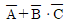
와 등가인 것은?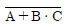
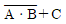
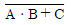
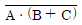
(정답률: 알수없음)
27. 상용 주파수의 교류용 전압계 및 전류계로 널리 사용되는 것은?
- 전류 전력계형 계기
- 정류계형 계기
- 용량형 계기
- 가동철편형 계기
(정답률: 알수없음)
28. 그림과 같은 무접점 회로의 논리식은?
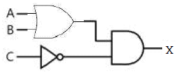
- X = A+B+C
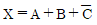
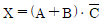
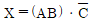
(정답률: 알수없음)
29. 전선의 저항과 같은 1Ω 이하의 낮은 저항을 정밀 측정하기에 가장 적합한 방법은?
- 전위차계법
- 전압 강하법
- 휘트스톤 브리지법
- 켈빈더블 브리지법
(정답률: 알수없음)
30. 전압 v(t)와 전류 i(t)가 다음과 같을 때 전류의 위상은 전압의 위상보다 어떻게 되는가?
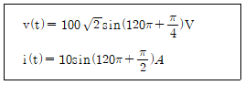
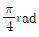
만큼 뒤진다. 만큼 앞선다.
만큼 앞선다. 만큼 뒤진다.
만큼 뒤진다.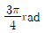
만큼 앞선다.
(정답률: 알수없음)
31. 교류회로에서 유효전력이 80 W이고, 무효전력이 60 var일 때 이 회로의 역률은?
- 0.5
- 0.6
- 0.7
- 0.8
(정답률: 알수없음)
32. e(t)=141sin(120π-π/3)V와 같은 전압의 주파수(Hz)는?
- 15
- 30
- 60
- 120
(정답률: 알수없음)
33. 교류회로에서 콘덴서의 용량성 리액턴스는?
- 전류의 주파수에 비례한다.
- 전압의 주파수에 비례한다.
- 전압의 크기에 비례한다.
- 콘덴서의 정전용량에 반비례한다.
(정답률: 알수없음)
34. 축전지의 용량 산정 시 고려되어야 할 사항이 아닌 것은?
- 충전 장치
- 예상 정전시간
- 부하의 크기와 성질
- 순시 최대 방전 전류의 세기
(정답률: 알수없음)
35. 선간전압 200 V, 역률 60%인 평형 3상 부하에서 소비 전력이 10kW일 때 부하전류는 약 몇 A인가?
- 33.1
- 43.1
- 48.1
- 56.6
(정답률: 알수없음)
36. 태양광전지 효율과 관계가 없는 것은?
- 태양복사에너지
- 태양광전지의 면적 9
- 최대전력점의 전력(PMPP)
- 주변 온도
(정답률: 알수없음)
37. 계자 권선과 전기자 권선이 병렬로만 연결된 직류 발전기는?
- 직권 발전기
- 분권 발전기
- 타여자 발전기
- 자석 발전기
(정답률: 알수없음)
38. 10Ω 짜리 저항 5개가 그림과 같이 연결되었을 때 이 회로의 합성저항(Ω)은?
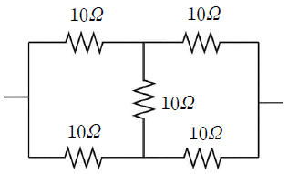
- 5
- 10
- 20
- 35
(정답률: 알수없음)
39. 그림의 회로에서 전원 전압의 실효값 크기가 220V이고, 부하 저항이 10Ω일 때 부하 전류의 평균값은 약 몇 A인가? (단, 다이오드의 전압 강하는 무시한다.)
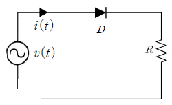
- 7
- 10
- 20
- 31
(정답률: 알수없음)
40. 상전압이 127 V인 Y결선의 평형 3상 전원이 있다. 이 전원의 선간전압은 약 몇 V인가?
- 220
- 180
- 127
- 100
(정답률: 알수없음)
3과목: 광파·음파표지
41. 지향등(direction light)에 관한 설명으로 옳은 것은?
- 좌현 측은 위험 영역으로 홍색광을 비춘다.
- 우현측은 위험 영역으로 녹색광을 비춘다.
- 중앙의 안전 영역은 황색광을 비추므로 그곳으로 진로를 잡으면 안전하다.
- 도등의 설치가 불가능한 곳에 선박을 유도하기 위하여 설치될 수 있다.
(정답률: 알수없음)
42. 일반적 대기온도에서 상층온도가 저온일 경우 지표에 가까울수록 음속은 어떻게 변화하는가?
- 음속이 커진다.
- 음속이 작아진다.
- 음속이 동일하다.
- 음속이 커졌다 작아진다.
(정답률: 알수없음)
43. 등부표의 계산기준수심이 30 m일 때 등부표 체인의 길이(m)는 약 얼마인가? (단, 수평력 To=1387.63kgf, 체인의 수중중량 P=27.42kgf/m)
- 50.10
- 55.37
- 62.74
- 68.64
(정답률: 알수없음)
44. 서방위표지에 대한 설명으로 틀린 것은?
- 서측에 장애물이 있음을 표시한다.
- 두표는 정점대향 흑색원추형 2개를 세로로 설치한다.
- 도색은 황색 바탕에 하나의 넓은 흑색 횡대이다.
- 등질은 매 10초 초급섬광 (9섬광) 또는 매 15초 급섬광 (9섬광)이다.
(정답률: 알수없음)
45. 등대의 높이가 100 m, 항해자의 수면 상 눈의 높이가 5m인 지리학적 광달거리는 약 몇 해리인가?
- 10.43
- 15.59
- 20.48
- 25.49
(정답률: 알수없음)
46. 수중 또는 수상의 암초 또는 해저면에 자체의 형상이나 색상, 두포, 등광의 특성 또는 이것들의 혼합에 의해 인지될 수 있는 고정 항로표지는?
- 등대
- 등표
- 등주
- 도등
(정답률: 알수없음)
47. 고유진동의 주파수와 외부에서 주어지는 외력의 진동수가 같아서 진폭이 최대가 되는 현상은?
- 회절
- 간섭
- 비트
- 공명
(정답률: 알수없음)
48. 굴절률이 1.5인 유리속에서의 광속(m/s)은? (단, 진공에서의 광속은 3×108m/s이다.)
- 1.5×108m/s
- 2.0×108m/s
- 3.0×108m/s
- 4.5×108m/s
(정답률: 알수없음)
49. 다음 중 연속 급섬백광을 사용하는 방위표지는?
- 북방위표지
- 남방위표지
- 서방위표지
- 동방위표지
(정답률: 알수없음)
50. 색깔이 다른 종류의 빛을 교대로 내며 각 색깔별 등색이 관측자에게 동일한 광도로 시인되는 등 광은?(오류 신고가 접수된 문제입니다. 반드시 정답과 해설을 확인하시기 바랍니다.)
- 부동등
- 명암등
- 섬광등
- 호광등
(정답률: 알수없음)
51. 50 phon은 약 몇 sone 인가?
- 2
- 3
- 4
- 5
(정답률: 알수없음)
52. 교량 등 중에서 교각을 표시하는 표지등은?
- 녹색 등
- 홍색 등
- 백색 등
- 황색 등
(정답률: 알수없음)
53. 부표 및 두표의 형상과 위치에 대한 설명으로 틀린 것은?
- 그 부표의 형상에는 원추형, 원통형, 구형, X형이 있다.
- 두표의 형상에는 원추형, 원통형 구형, X형이 있다.
- 두표는 부표의 본체보다 높은 위치에 설치하여야 한다.
- 부표 형상이 구형일 때 수선 상에 보이는 높이가 그 직경의 3분의 2 이상의 구이어야 한다.
(정답률: 알수없음)
54. 다음 중 광도의 단위로 옳은 것은?
- 1x
- cd
- nm
- lm
(정답률: 알수없음)
55. 압축공기에 의해서 취명부를 취명시키는 장치는?
- 다이아폰
- 무종
- 모터사이렌
- 전기혼
(정답률: 알수없음)
56. 두 개의 음이 동시에 발생할 때 한 음의 최저 가청한계가 다른 음 때문에 높아지는 현상은?
- 선스팩트럼 효과
- 복합음 효과
- 마스킹 효과
- 상음 음압 효과
(정답률: 알수없음)
57. 등대 및 등표 구조물 기초의 종류에 해당하지 않는 것은?
- 반력식 기초
- 중력식 기초
- 부착식 기초
- 부력식 기초
(정답률: 알수없음)
58. 등대에 강력한 투광기를 부착하여 표시 지점을 투사하여 위험구역을 표시하는 항로표지는?
- 도등
- 조사 등
- 지향등
- 도선
(정답률: 알수없음)
59. 다음은 빛의 어떤 현상에 대한 설명인가?
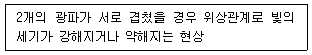
- 반사
- 간섭
- 편광
- 회절
(정답률: 알수없음)
60. IALA 해상부표식(B지역)에서 우현 표지의 의미는?
- 표지의 위치가 항로의 오른쪽 한계에 있음을 의미한다.
- 표지의 위치가 항로의 왼쪽 한계에 있음을 의미한다.
- 표지의 오른쪽에 가항수역이 있음을 의미한다.
- 표지의 왼쪽에 암초, 침선 등의 장애물이 있음을 의미한다.
(정답률: 알수없음)
4과목: 전파표지 및 시스템이용
61. 조류측정장치에는 도플러효과가 응용된다. 다음 중 도플러의 기본식으로 옳은 것은? (단, 수신주파수(f), 송신 주파수(f), 유속(V), 음속(C)이다.)
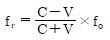
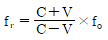
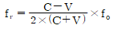
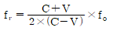
(정답률: 알수없음)
62. 무선 전파 송수신기를 이용하여 선박의 위치 정보 등을 자동으로 송수신하는 것은?
- 위성항법보정시스템(DGPS)
- 선박 통항서비스(VTS)
- 선박자동식별장치(AIS)
- 해상정보 및 통신시스템(MICS)
(정답률: 알수없음)
63. 레이더 지시기의 영상표시에 있어서 방위가 근접된 두개의 물표가 같은 거리에 있을 때 화면에 두개의 표적을 나타낼 수 있는 능력은?
- 거리 분해능
- 방위 분해능
- 잡음 분해능
- 화면 분해능
(정답률: 알수없음)
64. Loran-C에서 사용되는 지표파의 특징에 관한 설명으로 틀린 것은?
- 지표파는 지구표면을 따라 전파한다.
- 지표파는 주파수가 낮을수록 감쇠가 적다.
- 지표파는 공간파보다 수신점에 먼저 도착한다.
- 감쇠의 크기는 해상과 육상에서 차이가 없다.
(정답률: 알수없음)
65. 다음 중 GPS 측위 오차의 범위가 가장 큰 오차는?
- 위성 시계 오차
- 위성 궤도력 오차
- 대류층 오차
- 고의 오차(SA)
(정답률: 알수없음)
66. 다음과 같은 LORAN C 체인에서 주, 종국간 TD(Time Difference)값은? (단, Baseline Length:7000㎲, 할당된 Coding Delay: 11000㎲, 종국에서 수신기까지의 전기적 거리: 5000㎲, 주국에서 수신기까지의 전기적 거리: 6000㎲)
- 15000㎲
- 17000㎲
- 20000㎲
- 23000㎲
(정답률: 알수없음)
67. 항로표지 중 전파표지에 해당되지 않는 것은?
- 지상파항법시스템(LORAN)
- 레이더 비콘
- 위성항법보정시스템(DGNSS)
- 자동위치식별 신호 표지
(정답률: 알수없음)
68. GPS 위성의 고도와 궤도의 적도면에 대한 경사 각도는?
- 약 20000 km, 55°
- 약 25000 km, 53°
- 약 28000 km, 75°
- 약 30000 km, 51°
(정답률: 알수없음)
69. 주파수 300 kHz의 전파를 방사하는 수직접지 안테나의 실효고는 약 몇 m인가?
- 80
- 100
- 160
- 200
(정답률: 알수없음)
70. GPS를 이용하여 사용자의 3차원 위치를 구하기 위해서는 최소한 몇 개의 위성이 확보되어야 하는가? (단, 시간 오차도 보정한다.)
- 2개
- 3개
- 4개
- 5개
(정답률: 알수없음)
71. 전파표지에 사용되는 각 장비의 측정방식 중 쌍곡선을 이용한 측정방식이 아닌 것은?
- LORAN-C
- 데카
- 오메가
- GPS
(정답률: 알수없음)
72. 접지 안테나의 방사저항이 36Ω 이고, 접지저항이 2Ω이었다. 그 외 손실저항이 5Ω이라고 할 때, 이 안테나의 효율(%)은?
- 83.7
- 98.2
- 47.2
- 67.1
(정답률: 알수없음)
73. 항해자가 손쉽게 조류신호 정보를 취득할 수 있는 전광표지판의 표시방식으로 적절한 것은?
- 직사식
- 투과식
- 반사식
- 투영식
(정답률: 알수없음)
74. 일반적으로 도약 거리의 2배 이상의 거리에서 전리층과 지표간을 여러 번 반사하며 진행함으로써 발생하는 에코는?
- 근거리 에코
- 역회전 에코
- 지자극 에코
- 다중 에코
(정답률: 알수없음)
75. 로란-C 종국에서 발사되는 펄스군은 몇 개의 펄스로 구성되어 있는가?
- 8개
- 9개
- 10개
- 11개
(정답률: 알수없음)
76. 다음 중 레이더에 대한 설명으로 틀린 것은?
- 레이더는 전파가 물체에 부딪히면 반사하는 전파의 특성을 이용한 것이다.
- 스캐너와 스코프의 소인선은 서로 다른 속도로 회전하면서 영상이 나타난다.
- 선박용 레이더는 주로 X밴드 또는 S밴드의 주파수를 가진 전파를 발사한다.
- 선박용 레이더는 스캐너, 송수신기 및 지시기 등으로 구성되어 있다.
(정답률: 알수없음)
77. 레이더 반사기의 성능을 결정짓는 주요 요소가 아닌 것은?
- 레이더 반사기의 형
- 레이더 반사기의 크기
- 레이더의 반사기 출력
- 레이더 반사기의 수면 상의 높이
(정답률: 알수없음)
78. 특별정보를 이용자에게 알려주는 RTCM SC-104 메시지 형식은?
- Type 3
- Type 5
- Type 9
- Type 16
(정답률: 알수없음)
79. 전파의 회절 현상에 대한 설명으로 틀린 것은?
- 초단파대에서는 발생하지 않는다.
- 주파수가 낮을수록 심하다. 이
- 장중파대에서 많이 일어난다.
- 구면 대지에서는 회절 손실이 크다.
(정답률: 알수없음)
80. Helical 안테나에 대한 설명 중 틀린 것은?
- 나선형 안테나라고도 한다.
- 반사파에 의해서 동작한다.
- 비교적 광대역 특성이 있다.
- 고이득 특성을 갖는다.
(정답률: 알수없음)